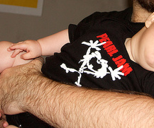

Last year I bought a Pearl Jam baby body at the Rock Werchter Festival. Our baby boy wasn’t born yet, but we waited patiently.. until today! Lucky my wife washed and put it on because it might have been too small in 2 weeks.

Not sure Tomas will be a fan of Pearl Jam, but the black suits him well. Oh, and on his bottom it says “I got shit”. Pearl Jam fans know.